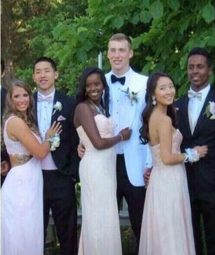
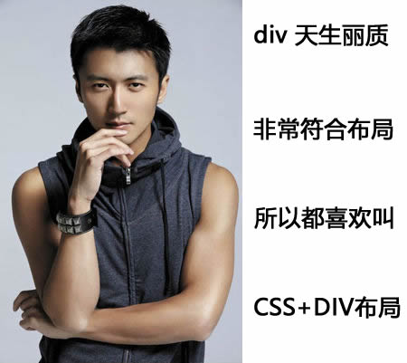
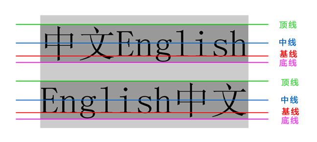

1. CSS复合选择器
复合选择器是由两个或多个基础选择器，通过不同的方式组合而成的,目的是为了可以选择更准确更精细的目标元素标签。
1.1 交集选择器
交集选择器由两个选择器构成，其中第一个为标签选择器，第二个为class选择器，两个选择器之间不能有空格，如h3.special。

记忆技巧：
交集选择器 是 并且的意思。 即...又...的意思
比如： p.one 选择的是： 类名为 .one 的 段落标签。
用的相对来说比较少，不太建议使用。
1.2 并集选择器
并集选择器（css选择器分组）是各个选择器通过逗号连接而成的，任何形式的选择器（包括标签选择器、class类选择器id选择器等），都可以作为并集选择器的一部分。如果某些选择器定义的样式完全相同，或部分相同，就可以利用并集选择器为它们定义相同的CSS样式。

记忆技巧：
并集选择器 和 的意思， 就是说，只要逗号隔开的，所有选择器都会执行后面样式。
比如 .one, p , #test {color: #F00;} 表示 .one 和 p 和 #test 这三个选择器都会执行颜色为红色。 通常用于集体声明。
 在一起， 在一起
在一起， 在一起
1.3 后代选择器
后代选择器又称为包含选择器，用来选择元素或元素组的后代，其写法就是把外层标签写在前面，内层标签写在后面，中间用空格分隔。当标签发生嵌套时，内层标签就成为外层标签的后代。

子孙后代都可以这么选择。 或者说，它能选择任何包含在内 的标签。
1.4 子元素选择器
子元素选择器只能选择作为某元素子元素的元素。其写法就是把父级标签写在前面，子级标签写在后面，中间跟一个 > 进行连接，注意，符号左右两侧各保留一个空格。

白话： 这里的子 指的是 亲儿子 不包含孙子 重孙子之类。
比如： .demo > h3 {color: red;} 说明 h3 一定是demo 亲儿子。 demo 元素包含着h3。
1.5 测试题
<div class="nav"> <!-- 主导航栏 -->
<ul>
<li>公司首页</li>
<li>公司简介</li>
<li>公司产品</li>
<li>联系我们</li>
</ul>
<div> 收藏本站 </div>
</div>
<div class="sitenav"> <!-- 侧导航栏 -->
<div class="site-l">左侧侧导航栏</div>
<div class="site-r"><a href="#">登录</a></div>
</div>
在不修改以上代码的前提下，完成以下任务：
链接 登录 的颜色为红色。
主导航栏里面的文字颜色为绿色。
主导航栏和侧导航栏里面文字都是16像素并且是微软雅黑。
收藏本站 要求字体加粗。
2. 标签显示模式（display）

非洲黑人： 皮肤内黑色素含量高，以吸收阳光中的紫外线，保护皮肤内部结构免遭损害，头发象羊毛一样卷曲，使每根卷发周围都有许多空隙，空隙充满空气，卷发有隔热作用。
欧洲白人： 生活寒带或着是说常年温度较低的地缘,加上年日照时间少，身体的黑色素沉淀比较少``所以出现皮肤、发色、瞳晕都呈现浅色
传智黄人： 我中间的。。。 
最重要的总结： 是为了更好的适应环境而完成的自然选择。
同理，我们网页的标签非常多，再不同地方会用到不同类型的标签，以便更好的完成我们的网页。
标签的类型(显示模式)
HTML标签一般分为块标签和行内标签两种类型，它们也称块元素和行内元素。具体如下：
2.1 块级元素(block-level)
每个块元素通常都会独自占据一整行或多整行，可以对其设置宽度、高度、对齐等属性，常用于网页布局和网页结构的搭建。
常见的块元素有<h1>~<h6>、<p>、<div>、<ul>、<ol>、<li>等，其中<div>标签是最典型的块元素。

块级元素的特点：
（1）总是从新行开始
（2）高度，行高、外边距以及内边距都可以控制。
（3）宽度默认是容器的100%
（4）可以容纳内联元素和其他块元素。
2.2 行内元素(inline-level)
行内元素（内联元素）不占有独立的区域，仅仅靠自身的字体大小和图像尺寸来支撑结构，一般不可以设置宽度、高度、对齐等属性，常用于控制页面中文本的样式。
常见的行内元素有<a>、<strong>、<b>、<em>、<i>、<del>、<s>、<ins>、<u>、<span>等，其中<span>标签最典型的行内元素。
 我一样重要
我一样重要
行内元素的特点：
（1）和相邻行内元素在一行上。
（2）高、宽无效，但水平方向的padding和margin可以设置，垂直方向的无效。
（3）默认宽度就是它本身内容的宽度。
（4）行内元素只能容纳文本或则其他行内元素。（a特殊）
注意：
只有 文字才 能组成段落 因此 p 里面不能放块级元素，同理还有这些标签h1,h2,h3,h4,h5,h6,dt，他们都是文字类块级标签，里面不能放其他块级元素。
链接里面不能再放链接。
2.3 块级元素和行内元素区别
块级元素的特点：
（1）总是从新行开始
（2）高度，行高、外边距以及内边距都可以控制。
（3）宽度默认是容器的100%
（4）可以容纳内联元素和其他块元素。
行内元素的特点：
（1）和相邻行内元素在一行上。
（2）高、宽无效，但水平方向的padding和margin可以设置，垂直方向的无效。
（3）默认宽度就是它本身内容的宽度。
（4）行内元素只能容纳文本或则其他行内元素。
2.4 行内块元素（inline-block）
在行内元素中有几个特殊的标签——<img />、<input />、<td>，可以对它们设置宽高和对齐属性，有些资料可能会称它们为行内块元素。
行内块元素的特点：
（1）和相邻行内元素（行内块）在一行上,但是之间会有空白缝隙。
（2）默认宽度就是它本身内容的宽度。
（3）高度，行高、外边距以及内边距都可以控制。
三者的 形状
| 显示模式 | 形状 | 图片 |
|---|---|---|
| 块级元素 | 面包 | |
| 行内元素 | 牛奶 |  |
| 行内块元素 | 果冻 |  |
2.5 标签显示模式转换 display
块转行内：display:inline;
行内转块：display:block;
块、行内元素转换为行内块： display: inline-block;
此阶段，我们只需关心这三个，其他的是我们后面的工作。
3. CSS伪类 伪元素
首先你要知道，CSS伪类，伪元素是CSS选择符的一部分。
由来： 就是为了描述一些现有CSS无法描述的东西。比如：
1.当用户鼠标移动到某个HTML元素上
2.离开HTML元素
3.点击HTML元素
这个原来的CSS不能做，那这里缺少什么，则引入什么。 为了和以前选择器使用区别，我们前面加一个伪字，成为伪类，伪元素。
3.1 伪类（重点）
伪类可以用于文档状态的改变、动态的事件等，例如用户的鼠标点击某个元素、未被访问的链接。
| :link | 伪类将应用于未被访问过的链接 |
| :hover | 伪类将应用于有鼠标指针悬停于其上的元素。 |
| :active | 伪类将应用于被激活的元素，如被点击的链接、被按下的按钮等。 |
| :visited | 伪类将应用于已经被访问过的链接 |
| :focus | 伪类将应用于拥有键盘输入焦点的元素。（ie8以上支持） |
链接伪类，他们规定执行有顺序的，不能随便更改位置：
要按照 :link --> :visited --> :hover --> :active 的顺序。
记忆口诀：
love 爱上了 hate
lv 包包， hao
3.1.1 文本修饰 text-decoration
检索或设置对象中的文本的装饰。
text-decoration : none || underline || blink || overline || line-through
none : 无装饰
underline : 下划线
line-through : 删除线
overline : 上划线
3.2 伪元素 （了解）
暂且我们先学习前两个，后面两个会CSS3学习， before和after 可是一个神奇的元素，敬请期待。
注意： :first-line 和 :first-letter 伪元素只能用于块级元素
4. 玩转行高
首先先要知道，文字的字号的大小，跟测量的高度、所占的位置会有出入的。 看下面两幅图片，你就明白。
4.1 文字的空白缝隙
文字和周边有一定距离的。
原因是：
如果没有距离，文字就挨着一起，不方便阅读
这样是不是舒服一些！！！
4.2 行高的测量


猜想，如果多行文本中，把行高改为0，会发生什么事情？
行高我们利用最多的一个地方是： 可以让一行文本在盒子中垂直居中对齐。
做法就是： 文字的行高等于盒子的高度。
这里情况些许复杂，开始学习，我们可以先从简单地方入手学会。

上距离和下距离总是相等的，因此文字看上去是垂直居中的。
4.3 行高单位
行高可以跟单位，也可以不跟单位。但是意义不一样。
font:12px/1.5em '宋体';
font:12px/150% '宋体';
font:12px/1.5 '宋体';
加上单位 父亲先计算 行高 后把行高继承给孩子 是以父亲为基准
不单位 父亲不计算，直接把 行高倍数 继承给孩子 孩子再用自己的字号 乘以行高倍数 是以自己字号为基准
5. 引入CSS样式表（书写位置）
css可以写到那个位置？ 是不是一定写到html文件里面呢？
5.1 行内式（内联样式）
是通过标签的style属性来设置元素的样式，其基本语法格式如下：
<标签名 style="属性1:属性值1; 属性2:属性值2; 属性3:属性值3;"> 内容 </标签名>
语法中style是标签的属性，实际上任何HTML标签都拥有style属性，用来设置行内式。其中属性和值的书写规范与CSS样式规则相同，行内式只对其所在的标签及嵌套在其中的子标签起作用。
5.2 内部样式表（内嵌式）
内嵌式是将CSS代码集中写在HTML文档的head头部标签中，并且用style标签定义，其基本语法格式如下：
<head>
<style type="text/css">
选择器 {属性1:属性值1; 属性2:属性值2; 属性3:属性值3;}
</style>
</head>
语法中，style标签一般位于head标签中title标签之后，也可以把他放在HTML文档的任何地方。
5.3 外部样式表（外链式）
链入式是将所有的样式放在一个或多个以.css为扩展名的外部样式表文件中，通过link标签将外部样式表文件链接到HTML文档中，其基本语法格式如下：
<head>
<link href="CSS文件的路径" type="text/css" rel="stylesheet" />
</head>
注意： link 是个单标签哦!!!
该语法中，link标签需要放在head头部标签中，并且必须指定link标签的三个属性，具体如下：
-href：定义所链接外部样式表文件的URL，可以是相对路径，也可以是绝对路径。
-type：定义所链接文档的类型，在这里需要指定为“text/css”，表示链接的外部文件为CSS样式表。
-rel：定义当前文档与被链接文档之间的关系，在这里需要指定为“stylesheet”，表示被链接的文档是一个样式表文件。
5.4 三种样式表总结
| 样式表 | 优点 | 缺点 | 使用情况 | 控制范围 |
|---|---|---|---|---|
| 行内样式表 | 书写方便，权重高 | 没有实现样式和结构相分离 | 较少 | 控制一个标签（少） |
| 内嵌样式表 | 部分结构和样式相分离 | 没有彻底分离 | 较多 | 控制一个页面（中） |
| 外部样式表 | 完全实现结构和样式相分离 | 需要引入 | 最多，强烈推荐 | 控制整个站点（多） |
5.5 导入式(理解)
导入式与链入式相同，都是针对外部样式表文件的。对HTML头部文档应用style标签，并在style标签内的开头处使用@import语句，即可导入外部样式表文件。其基本语法格式如下：
<style type="text/css" >
@import url(css文件路径);或 @import "css文件路径";
/* 在此还可以存放其他CSS样式*/
</style>
该语法中，style标签内还可以存放其他的内嵌样式，@import语句需要位于其他内嵌样式的上面。
改用法用的相对较少，常见于比较大型的项目中。
6. CSS 三大特性
层叠 继承 优先级 是我们学习CSS 必须掌握的三个特性。
6.1 CSS层叠性
所谓层叠性是指多种CSS样式的叠加。
比如先给某个标签指定了内部文字颜色为红色，接着又指定了颜色为蓝色，此时出现一个标签指定了相同样式不同值的情况，这就是样式冲突。
一般情况下，如果出现样式冲突，则会按照CSS书写的顺序，以最后的样式为准。
CSS最后的执行口诀： 长江后浪推前浪，前浪死在沙滩上。

6.2 CSS继承性
所谓继承性是指书写CSS样式表时，子标签会继承父标签的某些样式，如文本颜色和字号。想要设置一个可继承的属性，只需将它应用于父元素即可。
简单的理解就是： 子承父业。
CSS最后的执行口诀： 龙生龙，凤生凤，老鼠生的孩子会打洞。

注意：
恰当地使用继承可以简化代码，降低CSS样式的复杂性。但是，如果在网页中所有的元素都大量继承样式，那么判断样式的来源就会很困难，所以对于字体、文本属性等网页中通用的样式可以使用继承。例如，字体、字号、颜色、行距等可以在body元素中统一设置，然后通过继承影响文档中所有文本。
并不是所有的CSS属性都可以继承，例如，下面的属性就不具有继承性：边框、外边距、内边距、背景、定位、元素高属性。
6.3 CSS优先级
定义CSS样式时，经常出现两个或更多规则应用在同一元素上，这时就会出现优先级的问题。
在考虑权重时，初学者还需要注意一些特殊的情况，具体如下：
-- 继承样式的权重为0。即在嵌套结构中，不管父元素样式的权重多大，被子元素继承时，他的权重都为0，也就是说子元素定义的样式会覆盖继承来的样式。
-- 行内样式优先。应用style属性的元素，其行内样式的权重非常高，可以理解为远大于100。总之，他拥有比上面提高的选择器都大的优先级。
-- 权重相同时，CSS遵循就近原则。也就是说靠近元素的样式具有最大的优先级，或者说排在最后的样式优先级最大。 -- CSS定义了一个!important命令，该命令被赋予最大的优先级。也就是说不管权重如何以及样式位置的远近，!important都具有最大优先级。
6.4.1 CSS特殊性（Specificity）
关于css权重，我们需要一套计算公式来去计算，这个就是 CSS Specificity，我们称为CSS 特性或称非凡性，它是一个衡量CSS值优先级的一个标准 具体规范入如下：
specificity用一个四位的数 字串(CSS2是三位)来表示，更像四个级别，值从左到右，左面的最大，一级大于一级，数位之间没有进制，级别之间不可超越。
| 继承或者* 的贡献值 | 0,0,0,0 |
| 每个元素（标签）贡献值为 | 0,0,0,1 |
| 每个类，伪类贡献值为 | 0,0,1,0 |
| 每个ID贡献值为 | 0,1,0,0 |
| 每个行内样式贡献值 | 1,0,0,0 |
| 每个!important贡献值 | ∞ 无穷大 |
比如的例子：
div ul li ------> 0,0,0,3
.nav ul li ------> 0,0,1,2
a:hover -----> 0,0,1,1
.nav a ------> 0,0,1,1
#nav p -----> 0,1,0,1
注意： 数位之间没有进制 比如说： 0,0,0,5 + 0,0,0,5 =0,0,0,10 而不是 0,0, 1, 0， 所以不会存在10个div能赶上一个类选择器的情况。
总结优先级：
1.使用了 !important声明的规则。
2.内嵌在 HTML 元素的 style属性里面的声明。
3.使用了 ID 选择器的规则。
4.使用了类选择器、属性选择器、伪元素和伪类选择器的规则。
5.使用了元素选择器的规则。
6.只包含一个通用选择器的规则。